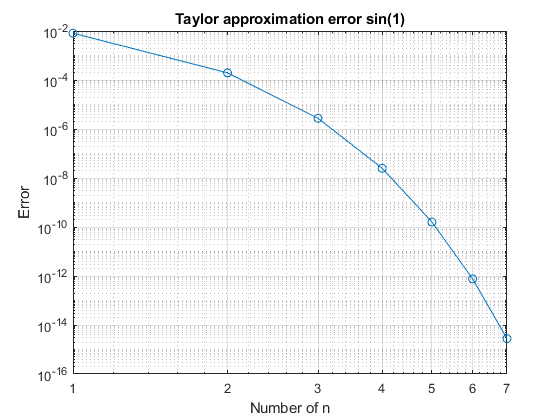
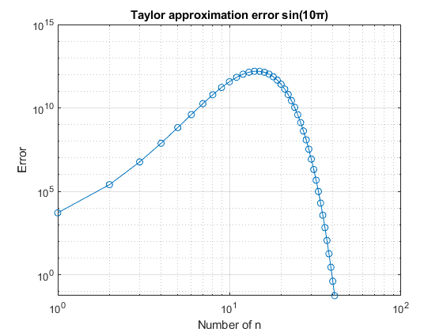
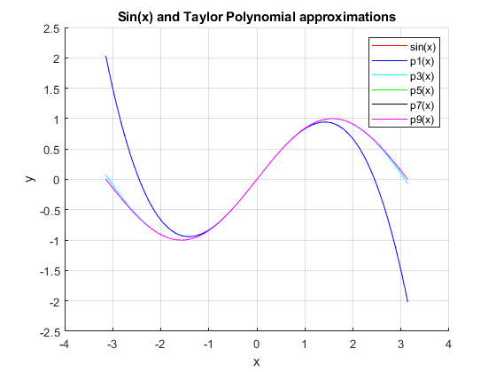

% Main Script
QUESTION 2: approximate sin(1) using only 3 term of its Taylor series by calling your sin_taylor function. Give an estimate of the error using the built-in sin function.
my_fun = sin_taylor(1,3); built_in = sin(1); estimate_error = abs(my_fun-built_in);
QUESTION 3: Estimate the error for the Taylor approximation of sin(1) for n = 1, . . . , 41. Plot the error versus n using MATLAB%s built-in loglog command. Approximately how many terms are necessary to obtain error less than 10−5 ? What about error less than 10−15? Comment your results.
% COMMENT: For this particular exercise, I will modify my function % and put it in another script so I can calculate the error. % ANSWERS: 34 terms to obtain an error less than 10^-5. ers = sin_taylor2(1,41); nv=1:41; loglog(nv, ers, '-o'); xlabel('Number of n'); ylabel('Error'); title('Taylor approximation error sin(1)'); grid on;
% QUESTION 4: Approximate sin(10π) using a Taylor approximation of % order n = 1, . . . , 41. Plot the error versus n using Matlab s % built-in loglog command. Comment your results. % COMMENT: It seems to have a very similar behavior to the previous % exercise. ers2 = sin_taylor2(10*pi,41); nv2=1:41; loglog(nv2, ers2, '-o'); xlabel('Number of n'); ylabel('Error'); title('Taylor approximation error sin(10π)'); grid on;
% QUESTION 5: Produce a graph of sin x for x ∈ [−π, π] using Matlab’s % in-built function sin. On the same plot, superimpose graphs of Pn(x), % for n = 1, 3, 5, 7, 9, where Pn is the approximating Taylor polynomial % of order n. Comment your results % COMMENT: For this particular exercise, I will modify my function % and put it in another script so I will be able to plot Pn(x)s. % STEP 1: Plot sin(x) close all; hold on; x = linspace(-pi, pi, 100); sin_x = sin(x); plot(x, sin_x, 'r') % STEP 2: Plot graphs of Pn(x) for n = 1, 3, 5, 7, 9 n_order = [1, 3, 5, 7, 9]; colors = ['b', 'c', 'g', 'k', 'm']; for i = 1:length(n_order) n = n_order(i); color = colors(i); plot(x, sin_taylor3(x, n) , color); end hold off; % STEP 3: Add labels, title and legend xlabel('x'); ylabel('y'); title('Sin(x) and Taylor Polynomial approximations'); legend('sin(x)', 'p1(x)', 'p3(x)', 'p5(x)', 'p7(x)', 'p9(x)'); grid on; hold off;
QUESTION 6: Use a Taylor expansion of sin to prove the error bound sin(1) − 0.8416 < 1/7!. Generalize this result to prove an error bound for sin(x) − Pn(x) x ∈ R, n ∈ N.
% COMMENT: for this exercise i will use my original sin taylor expansion.In % other words the sin_taylor function on sin_taylor script. % We know that... k = 1/factorial(7); % With the taylor expasion of sin... we know that... sin_1 = sin_taylor(1, 3); constant = 0.8416666666666666666666; % So.. if abs(sin_1 - constant) < k disp('TRUE'); else disp('FALSE'); end % Proof: % We know that Taylor expansion has this formula: % (-1^n)(x^(2n+1)) / (2n+1)!. % By hypothesis of this problem, we know that the denominator is 7!, % hence that: % 7 = (2n+1) -> n=3. Now, we can say that P3(x), in other words of order 3. % We can see that it depends on n. % Lets continue... % (-1^3)(1^(2(3)+1)) / (2(3)+1)! = (-1)(1) / 7! = -1/7! % We can see in the row above that there is a pattern to this... % So the generalize error bound will be: % | (-1^n)(x^(2n+1)) / (2n+1)! | = abs( (-1^n)(x^(2n+1)) / (2n+1)! ).
TRUE
QUESTION 7: Consider a modification of the bisection algorithm which iteratively trisects the interval at each step instead of bisecting it. Describe this algorithm in pseudocode and prove that given a, b, f such that f : [a, b] → R is continuous and sgn(f(a)) ̸= sgn(f(b)), the algorithm is guaranteed to converge to a root of f.
% DESCRIPTION: % 1. Each iteration lets divide the interval [a,b] into three equal % subintervals, instead of two as the Bisection does. This subintervals % are: subinterval 1: [a, (2a + b) / 3], % subinterval 2: [(2a + b) / 3, (a + 2b) / 3] % subinterval 3: [(a + 2b) / 3, b] % 2. Evaluate the function at the end points of each subinterval made in % the STEP 1. % 3. If any of these values are close to zero, we have found % an approximate root. Otherwise, continue to STEP 4. % 4. If any of these values are close to zero, lets take the subinterval % with the smallest absolute value (calculated in STEP 2) and divide into % three more equal subintervals. % 5. Repeat until you find the approximate root or until you reach % the maximum number of iterations. % Proof arguments: % - The interval [a,b] is repeatedly trisected and the subinterval that % contains the root is becoming more refined with each iteration. % - The subinterval will converge to a single point. This is because the % subinterval will become smaller and smaller with each 3-segmentation % made according to the increase in iterations. % - Once the subinterval size becomes smaller than the specified tolerance % x, the output of the algorithm is the midpoint of the final subinterval. % This point we called the root of f.
QUESTION 9: Showcase your trisection algorithm in main.m. Specifically, make suitable function calls to demonstrate that it has the required properties. Demonstrate how it can be used to solve the equation x = cos(x). Comment your results.
% Trisection algorithm syms x % Example 1 f = 5*x^3-2*x+16; a = -1; b = -2; num_iter = 100; epsilon = 0.00001; root = trisection(f, a, b, epsilon, num_iter); % Example 2 g = x^2 + 4*x - 6; c = -5; d = -6; num_iter = 100; epsilon = 0.00001; root2 = trisection(g, c, d, epsilon, num_iter);
QUESTION 10: Decide which algorithm is better between the bisection and trisection algorithms. Explain and justify your answer.
% I consider that the best algorithm is bisection because it requires % fewer iterations because it divides the interval fewer times and % actually requires fewer partitions to converge on the desired root. % Likewise, it allows for lower algorithmic complexity and, therefore, % lower computational cost.